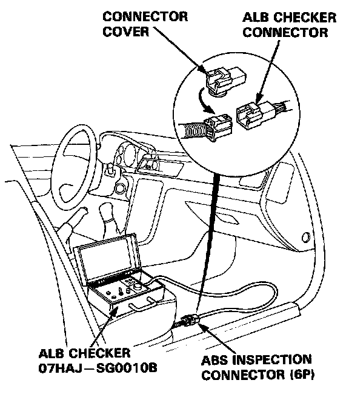
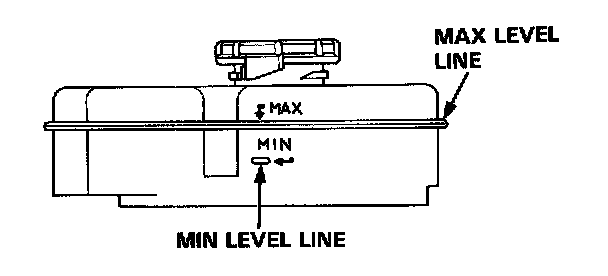
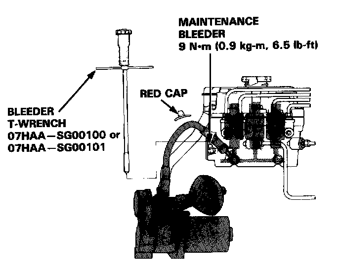

With Anti-Lock Brake (ALB) Checker
CAUTION:- Do not spill brake fluid on the car: it may damage the paint; if brake fluid does contact the paint, wash it off immediately with water.
- Make sure no dirt or other foreign matter is allowed to contaminate the brake fluid.
- Do not mix different brands of brake fluid as they may not be compatible.
- Do not reuse the drained fluid. Use only clean DOT 3 or 4 brake fluid.
Bleeding Air with ALB Checker
1. Place the vehicle on level ground with the wheels blocked. Put the transmission in neutral for manual transmission models, and in [P] position for automatic transmission models. Release the parking brake.

2. Disconnect the ABS inspection connector (6P) from the cross-member under the passenger's seat and connect the ABS inspection connector (6P) to the ALB checker.

3. Fill the modulator reservoir to the MAX level line and install the reservoir cap.
4. Start the engine and allow it to idle for a few minutes, then stop it. Check the fluid level in the modulator reservoir and refill to the MAX level line if necessary.

5. Bleed high-pressure fluid from the maintenance bleeder with the special tool.
6. Start the engine and allow it to idle for a few minutes, then stop it. Check the fluid level in the modulator reservoir and refill to the MAX level line if necessary.
7. Turn the Mode Selector switch of the checker to 2.
8. While depressing the brake pedal firmly, push the Start Test switch to operate the modulator. There should be kickback on the brake pedal. If not, repeat steps 5 to 8.
NOTE: Continue to depress the brake pedal firmly when operating the checker.
9. Turn the Mode Selector to 3, 4, and 5. Perform step 8 for each of the test mode positions.
10. Refill the modulator reservoir to the MAX level line and install the reservoir cap.
Warning:
- Disconnect the ALB Checker before driving the car A collision can result from a reduction or complete loss of braking ability, causing severe personal injury or death.